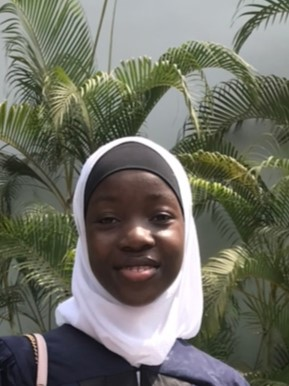

Gallery


Hey there!
I am Meymunah Olajobi, a Nigerian Muslim Female who is all about positivity!
She is a tech enthusiast and also passionate about teaching. She also is a budding Psychologist.
She loves helping people be the best version of themselves, as it gives her fulfillment.
She is the 3rd of 5 children in her family, and the only girl.
One thing that really interests her is marriage. She sometimes is shy to admit it, as she's anxious about what people will think of that.
Meymunah has always been an organized person, and so it's expected of her to be organized at every aspect of her life including academics.
However, not until when she was about to get admitted into university (after a gap year) did she now become to get serious about her academics.
She seems to currently be confused about her career.
This is because, since she was in Junior Secondary School III,
she had been volunteerring by teaching at her parents school, and doing excellently well.
During her gap year as well, alongside the diploma she was taking, she also taught for 6 months,
and she did not realize it, but her parents mentioned how passionate she seemed about teaching, and how much she seems to really love it!
So, Education; teaching (a special type though) is one of her career options.
When she was younger, at some point in her life. She seemed to be really interested in Psychology, and was opportuned with a schorlarship to study Psychology at a university online.
Though, she could not follow through to the end as she had to resume a physical university to get her BSc. Degree, she really enjoyed the little time spent!
So, Psychology -not sure of the area yet though- is another one of her career options.
Currently, at Pan Atlantic Univeristy, she is studying Computer Science, and seems to take a liking to software development.
So, Software Development -tending towards web and mobile development and human-computer interaction- is what she seems to be interested in.
Thus the crisis! But, I know she'll be fine. With time and conscious self discovery, she'll get there.
"No matter how good you are, people will still hate you and not appreciate it. Be good anyways."
"Never give up! It will pay off someday!"